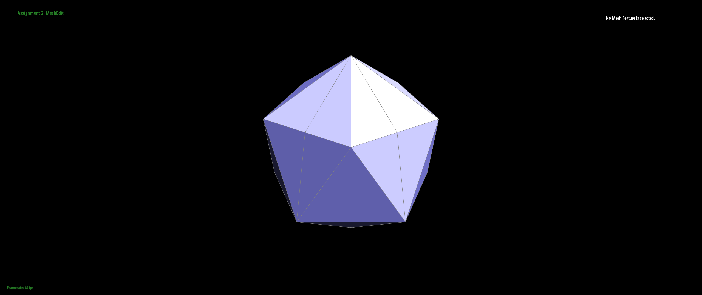

Overview
In this assignment, we implemented a mesh rendering system. We Bezier Curves with 1D de Casteljau Subdivision to create nice, smooth curves that can easily be adjusted by just moving the control points or adjusting the t parameter. We then extended this logic so that we could use this technique on 3D meshes. We learned the usefulness of the halfedge data structure, first through using it to implement smooth shading through area-weighted vertex normals. Finally, we implemented edge flips, and edge splits in order to perform loop subdivision for mesh upsampling, resulting in finer detailed meshes. It's interesting that all the detail we see in video games and movies comes down to how many times a mesh's triangles are divided. Combine that with nice shading, and the detail can become impeccable!
Section I: Bezier Curves and Surfaces
Part 1: Bezier Curves with 1D de Casteljau Subdivision
Briefly explain de Casteljau's algorithm and how you implemented it in order to evaluate Bezier curves.
De Casteljau's algorithm is a recursive approach to determine the position of a point on a Bezier curve by utilizing
repeated linear interpolation. The algorithm operates on a group of control points that outline the Bezier curve,
and it assesses the point's position on the curve based on a specified parameter value.
The algorithm is pretty straightforward, so we iterated through the points array while comparing the point at index
i with the point at index i+1, using the algorithm (lerp) on every such pair of points, adding it to a new array that we
would return. The t value determined the weighting of each point.
Take a look at the provided .bzc files and create your own Bezier curve with 6 control points of your choosing. Use this Bezier curve for your screenshots below.
Show screenshots of each step / level of the evaluation from the original control points down to the final evaluated point. Press E to step through. Toggle C to show the completed Bezier curve as well.
|
|
|
|
|
|
|
|
|
Show a screenshot of a slightly different Bezier curve by moving the original control points around and modifying the parameter \(t\) via mouse scrolling.
|
|
|
Part 2: Bezier Surfaces with Separable 1D de Casteljau
Briefly explain how de Casteljau algorithm extends to Bezier surfaces and how you implemented it in order to evaluate Bezier surfaces.To evaluate a point on a Bezier surface using De Casteljau's algorithm, we can modify the recursive process to operate on a grid of control points instead of a linear sequence. At each recursion depth, we compute the intermediate points along each row of the grid using linear interpolation, and then recursively call the function with the new set of control points and the next recursion depth until each row has been condensed into one linearly interpolated point. Then, we perform this same recursive process on the one column remaining after each row has been condensed to one point. When the recursion depth reaches 0, we return the single remaining point on the surface.
Show a screenshot of bez/teapot.bez (not .dae) evaluated by your implementation.
Section II: Triangle Meshes and Half-Edge Data Structure
Part 3: Area-Weighted Vertex Normals
Briefly explain how you implemented the area-weighted vertex normals.
To compute the normal of a 3D vertex, we would use the cross product of the 2 edges subtending the angle formed by
that vertex. Starting with vector v1 that corresponds to the vertex we are computing the normal of, the other 2
vertices in the triangle are labelled v2 and v3. The edge going from v1 to v2 can be represented by v2 - v1, and the
edge going from v1 to v3 is represented by v3 - v1 (we used halfedge()->next() and halfedge()->next()->next() for v2
and v3 respectively). Once we have the 2 subtending edges we compute the cross product - cross(v2 - v1, v3 - v1) to
get the normal vector.
We also need to weight by the area of the neighbors. The area of a triangle in 3D can also be computed using the
cross product, normalizing it, and dividing by 2 (we found the formula online). We go through all the neighboring
triangles of the starting vertex by using a do-while loop found in the primer, accumulating every area of a triangle
multiplied by the normalized vector. Finally, we returned this accumulation (stored as result) and turned it into a
unit vector.
Show screenshots of dae/teapot.dae (not .bez) comparing teapot shading with and without vertex normals. Use Q to toggle default flat shading and Phong shading.
|
|
|
Part 4: Edge Flip
Briefly explain how you implemented the edge flip operation and describe any interesting implementation / debugging tricks you have used.We mainly followed this reference. This involved:
- Collecting every halfedge, vertex, edge, and face relevant to our halfedge.
- Reassigning every pointer for every element we collected above based on the diagram image.
Show screenshots of the teapot before and after some edge flips.

|
|
Write about your eventful debugging journey, if you have experienced one.
As we used the HalfEdgeImplementationGuide from the primer to implement edge flips, we weren’t sure if our code was going to work on the first try. We gave it a shot and lo and behold, it ended up working on the first try. Not sure that has ever happened to us before.
Part 5: Edge Split
Briefly explain how you implemented the edge split operation and describe any interesting implementation / debugging tricks you have used.We followed a similar process to edge flipping, just following a different diagram:
Show screenshots of a mesh before and after some edge splits.
|
|
|
Show screenshots of a mesh before and after a combination of both edge splits and edge flips.
|
|

|
Write about your eventful debugging journey, if you have experienced one.
Our debugging journey was mostly pertaining to edgeSplit() being called in task 6. We had to assign isNew booleans to the edges that were created, but of the 4 edges that were being changed/added (e0, e5, e6, e7), we weren’t sure whether we should consider e0 and e5 (the original splitting edge) to be a new edge or not. This made debugging a little bit frustrating because we would get an infinite loop when keeping e0 and e5 as old edges (which is actually correct), but it ended up being a minor change.
If you have implemented support for boundary edges, show screenshots of your implementation properly handling split operations on boundary edges.
Part 6: Loop Subdivision for Mesh Upsampling
Briefly explain how you implemented the loop subdivision and describe any interesting implementation / debugging tricks you have used.We used the 5-part pseudocode provided in the starter code to implement our subdivision algorithm. Part 1 was using the loop subdivision rule to compute the new vertex positions. We looped through all the neighbors in sequence to get an accumulation of neighborSum, and before that we used vertex->degree() to get the degree. This allowed us to use the formula v->newPosition = (1.0f - (float) n * u) * v->position + u * neighborSum and place it as the new position for every vertex. Part 2 was similar to part 1 except we were doing it for the edges. This was actually a little more complicated because we had some bugs in our code with regards to computing the correct vertex positions; here we used the formula as well. These two components set us up for doing the loop subdivision in parts 3 and 4. In parts 3 and 4 were splitting and flipping respectively. Something that we were having trouble with was deciding how many times we wanted to go through the mesh.edges array, since every split would effectively add to the array size, resulting in an infinite loop. We solved our issue by using a counter, and breaking the loop when counter reached the original array size. This worked because any new edges were appended to the end of the list of edges. For part 4 we flipped every edge that was new (e->isNew) and either had a previous vertex that was new with the next vertex being old, or vice versa. This was fairly straightforward as our code for tasks 4 and 5 were correct. Finally, we set the position of the vertex to the newPosition attribute in part 5.
Take some notes, as well as some screenshots, of your observations on how meshes behave after loop subdivision. What happens to sharp corners and edges? Can you reduce this effect by pre-splitting some edges?
Sharp corners and edges remain protruding from the rest of the shape's smoothing even after subdivision. Sharp
corners are usually created with halfedges forming a pentagon around the vertex. We can reduce this affect by
splitting there of the edges going through this vertex to make the pentagon into a hexagon and skinnier. This results in the vertex not
protruding as much.
Here are images of subdivision performed with no pre-splitting:
|  | |
Load dae/cube.dae. Perform several iterations of loop subdivision on the cube. Notice that the cube becomes slightly asymmetric after repeated subdivisions. Can you pre-process the cube with edge flips and splits so that the cube subdivides symmetrically? Document these effects and explain why they occur. Also explain how your pre-processing helps alleviate the effects.
The reason why the cube becomes slightly asymmetric after repeated subdivisions is because each face of the cube
only has one diagonal going through it originally. So when the subdivision occurs, this edge always remains, while
other edges repeatedly become smaller through subdivision, making the original diagonal look stretched out in
comparison. This can be fixed by splitting that diagonal originally so that there is an 'X' on each face of the cube
instead of just a single diagonal. Now, both diagonals become "stretched" relative to all the other edges being
created and split through subdivision, so the cube remains symmetric.
Here is the cube with no pre-splitting:
If you have implemented any extra credit extensions, explain what you did and document how they work with screenshots.
Part 7 (Optional, Possible Extra Credit)
Save your best polygon mesh as partsevenmodel.dae in your docs folder and show us a screenshot of the mesh in your write-up.
Include a series of screenshots showing your original mesh and your mesh after one and two rounds of subdivision. If you have used custom shaders, include screenshots of your mesh with those shaders applied as well.
Describe what you have done to enhance your mesh beyond the simple humanoid mesh described in the tutorial.